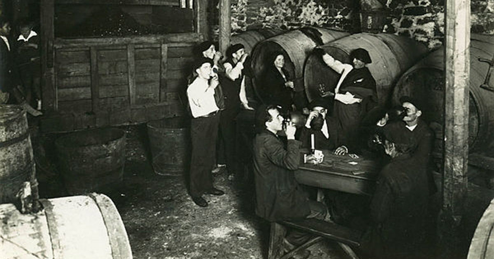

En El Sidrero, llevamos más de 70 años perfeccionando el arte de la sidra.
Somos una familia apasionada por mantener viva la tradición asturiana de producir
la mejor sidra con un toque de amor y dedicación.
Nuestra Historia

Generaciones de Pasión y Compromiso
Desde 1952, nuestra familia ha trabajado incansablemente
para llevar la auténtica experiencia de la sidra asturiana a tu mesa.
Cada botella cuenta una historia de esfuerzo,
dedicación y el orgullo de pertenecer a una tradición centenaria.
Proceso Artesanal
De la Manzana a la Botella
Te invitamos a explorar nuestro llagar y descubrir el
proceso artesanal que da vida a nuestra sidra. Desde la
cuidadosa selección de las manzanas hasta la fermentación
y embotellado, cada paso se realiza con un compromiso inquebrantable
con la calidad y la autenticidad.